Mind a hat jelzésedet végignéztem, mindegyiknél előbb az okot kerestem meg. Négy javítva van: a fordulás nem pulzál, a Big Boy két forgóvázon ül, a vágási felület festett végfal, és a dízel- és villanymozdonyok teste párhuzamos a sínnel. Az ötödik, a gőzösök „kettéváló” eleje a széles nyomtávból jön: ehhez a három nyomtávszintet mutatom, a döntés a tiéd. Az Mk48-hoz nem nyúltam.
Egy mozdony 48 irányból van renderelve. Az előző körben két irány között a képet a hossztengelye mentén ferdítettem a pontos irányba. Ez a test tengelyét jól tartotta, de a kép szélességét is nyújtotta és zsugorította, 7,5 fokonként akár 13 %-kal, majd a következő képnél visszaugrott. Ezt láttad lüktetésnek.
Most a kép egy dobozra feszítve fordul. Minden résznek (test, szerkocsi, forgóváz) megvan a doboza a modellből: hossz, szélesség, magasság. A kamera a doboz három lapját látja: a tetőt, a közelebbi oldalt és a közelebbi véget. Mindhárom lap a saját síkjában fordul a pontos irányba: az oldalon a függőlegesek függőlegesek maradnak, a tető alaprajzként fordul, a három lap pedig az éleknél összeér, így a kép nem szakad.
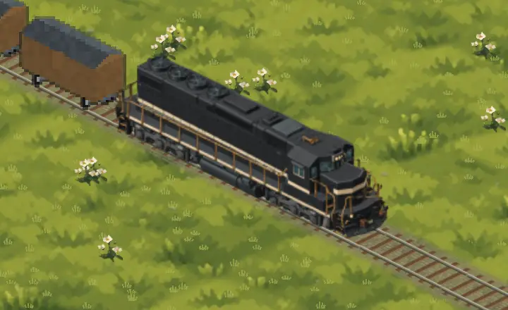
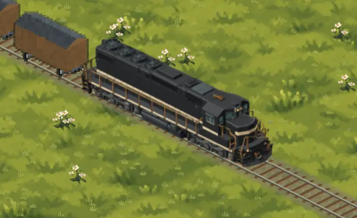
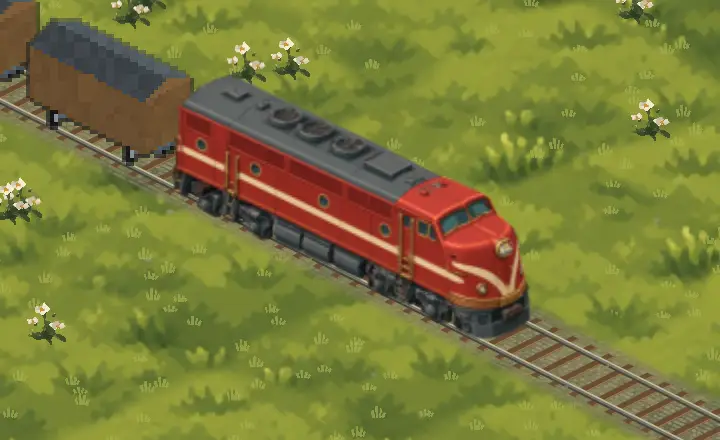
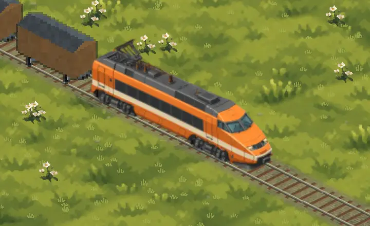
Úgy készült, ahogy a szűk ívre épített modellek: mindkét hajtott kerékcsoport külön forgóváz, a kazán és a fülke rajtuk ül. Az első forgóváz viszi magával a futókerekeket, a hengereit és a sínkotrót a mellső peronnal; a hátsó a saját hengereit és a fülke alatti tengelyt a lépcsőkkel. A rudazat mindkettőn jár. Egy hosszú forgóváz nem érintőként, hanem húrként áll a sínen, így a szélső és a középső kerekei egyformán közel maradnak hozzá (a legszűkebb ívben 0,07 mezőn belül).
Amit az ívben látsz: a két forgóváz a sínt követi, a kazán eleje pedig kilendül az ív külső oldalára, ahogy egy modellnél is. Ennek mértéke számtan: a kazán a fülkével 2,82 mező, a két forgócsap 1,5 mezőre van egymástól, a kazán 0,89 mezőt nyúlik az első forgócsap elé, az ív sugara pedig 1,5 mező.
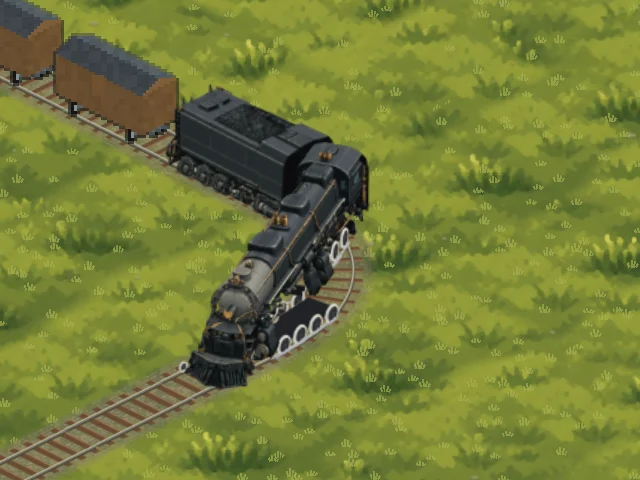
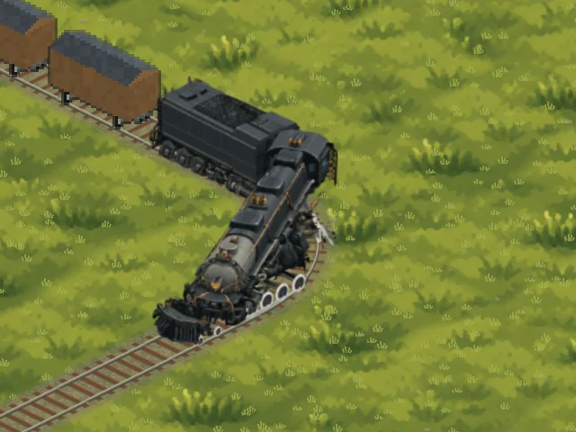
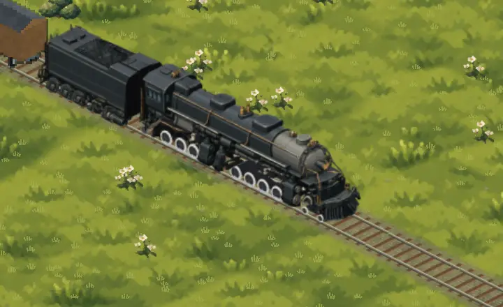
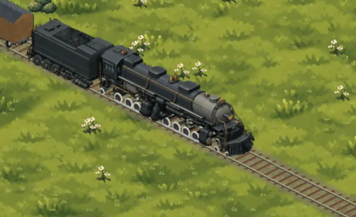
Igazad volt, a sötét lap ürességnek látszott. Ahol egy testet elvágok a szomszédjától (mozdony és szerkocsi, a DDA40X két fele), ott a vágást most végfal zárja, amely a test saját színeit viseli: minden magasságban azt a színt, ami ott az oldalfalon van, így a festés sávjai körbefutnak a sarkon. Az oldalnál egy árnyalattal sötétebb, a közepén sötétebb mezővel (ajtó, szénkamra).
A fal a test valódi keresztmetszetét követi (a DDA40X-nél a keskeny géptetőt a járdával, nem egy ferde lapot), és ahol a test már a vágás előtt véget ér, ott nincs fal, csak a modell saját vége. A forgóvázak helyén a test alja sötét maradt: az a jármű alja, oda nem való festés.
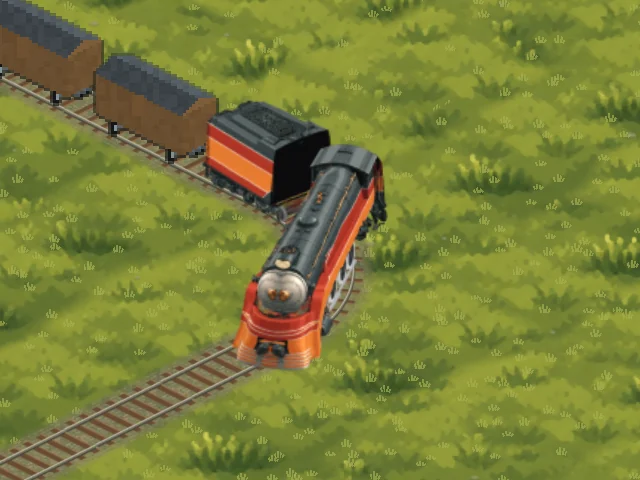
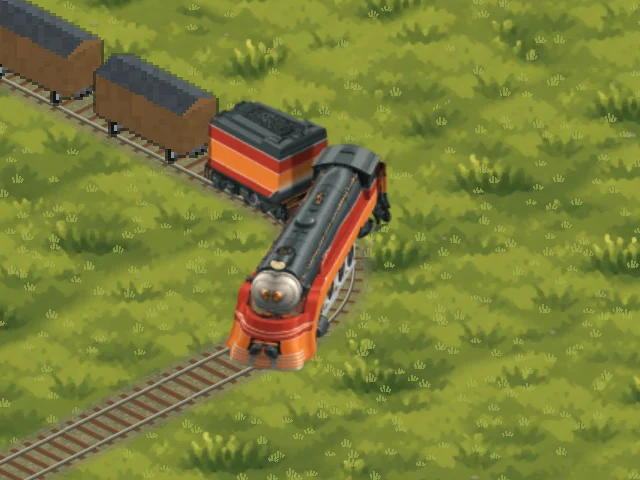
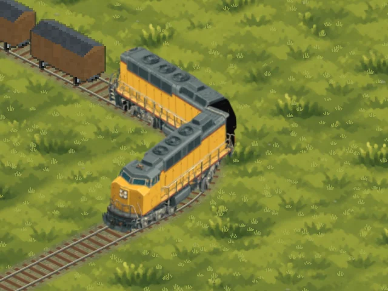
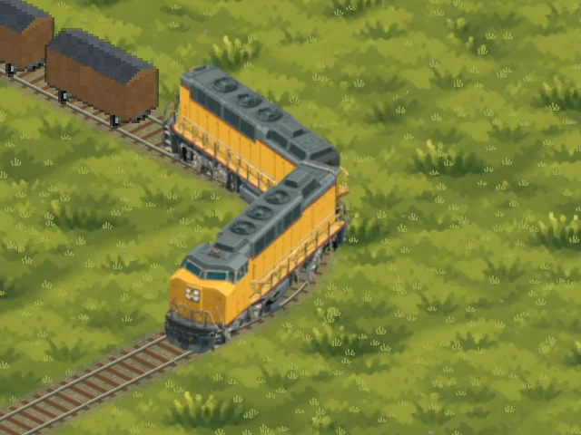
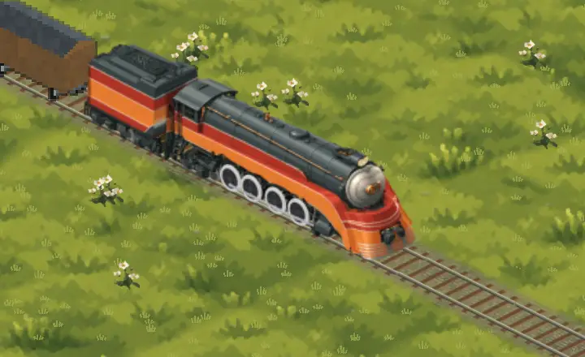
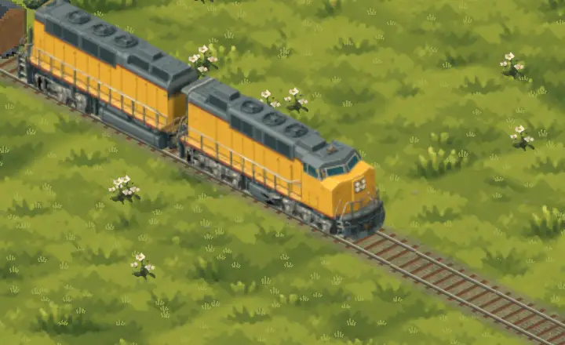
Kimértem a modelleken, és jól láttad. Három különböző hibát találtam, mozdonyonként mást:
A javítás: a dízel- és villanymozdonyok (20 db) teste mostantól a saját hosszú vonalaira áll be. Az oldalfalak a sínnel párhuzamosak, az alj és a tető vízszintes; a forgó kerekek ettől függetlenül a sínen állnak. Egy vonal csak akkor számít, ha többféle mérés ugyanazt adja, és a test nagy részén végigfut; 17 mozdonynál kellett igazítani. A gőzösöknek nincs ilyen vonaluk (kazán, szerkocsi), ők a kerekeiken állnak, mint eddig.
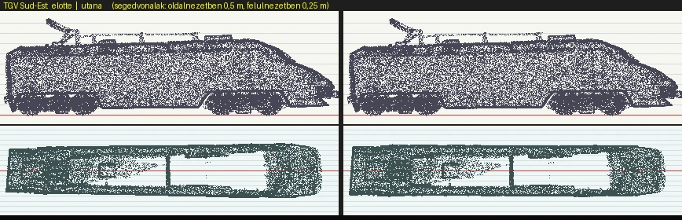
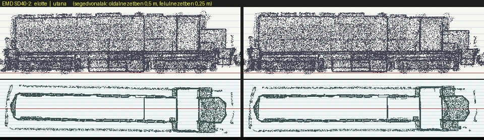
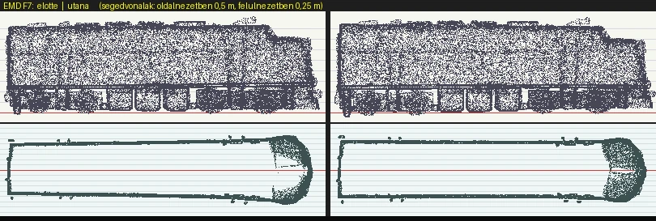
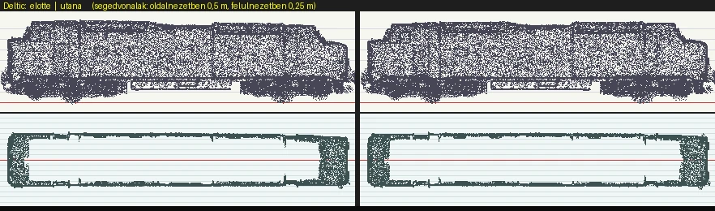
| ID | Mozdony | Elfordítva | Megdöntve | Szélesség, két vég között | Magasság, két vég között | |
|---|---|---|---|---|---|---|
| 2 | BM-50 | +8 % | +4 % | |||
| 3 | Muki | −1,1° | ||||
| 4 | C-50 | +0,4° | ||||
| 6 | MÁV Mk45 | −13 % | ||||
| 7 | MÁV Mk48 | a vonalai rendben voltak, vagy nem mérhetők | ||||
| 13 | BR Class 08 | +0,2° | −2 % | |||
| 16 | Kandó V40 | +1,9° | +5 % | |||
| 17 | EMD SW1 | a vonalai rendben voltak, vagy nem mérhetők | ||||
| 19 | SBB Ce 6/8 Crocodile | −0,2° | −6 % | −8 % | ||
| 20 | Deltic Class 55 | −4 % | −10 % | |||
| 22 | EMD F7 | −0,9° | +20 % | |||
| 24 | ICE 1 | −0,3° | +5 % | |||
| 26 | M62 Szergej | −0,3° | +8 % | |||
| 28 | SBB Re 460 | −0,3° | ||||
| 29 | ÖBB 1116 Taurus | −0,9° | ||||
| 30 | TGV Sud-Est | +21 % | ||||
| 31 | V63 Gigant | −0,2° | +5 % | |||
| 33 | DDA40X Centennial | a vonalai rendben voltak, vagy nem mérhetők | ||||
| 34 | PRR GG1 | +12 % | ||||
| 37 | EMD SD40-2 | +1,1° | +12 % |
A százalék azt mutatja, mennyivel volt nagyobb az orr a hátuljánál (szélességben, illetve a szekrény magasságában); ennyit vettem ki.
A 36-os (9F) gőzös, rajta nem találtam mérhető eltérést: az alja 0,05 fokon belül vízszintes. Ha a mostani képen is látod, karikázd be, hol.
Rétegenként szétszedtem a képet. Az elejét nem a modell vágja ketté: az első futókerekek lógnak ki alóla, két okból.
Ezen a modellben nem tudok javítani úgy, hogy a kerekek a sínen maradjanak. A szűkebb nyomtáv viszont mindkettőn segít: a kerekek beljebb kerülnek a test alá. Ezt mutatja a következő rész.
Dízelek és villanymozdonyok: a felvételeket kockánként átnézve náluk is találtam kettéváló orrot. A forgóváz eddig magával vitte a test végének alját (a TGV orrának szoknyáját, az ütközőgerendát, a lépcsőket), és az ívben ez kifordult a test alól. Most a test vége a testen marad, a forgóváz alatta fordul (18 mozdony).
Ugyanaz az öt mozdony, ugyanabban a nagyításban. A pályarajzot (sínek, talpfák, ágyazat) arányosan szűkítettem, a mozdonyokat mindhárom nyomtávra külön rendereltem, hogy a kerekek a sínen álljanak. Keskeny nyomtávhoz nem nyúltam.
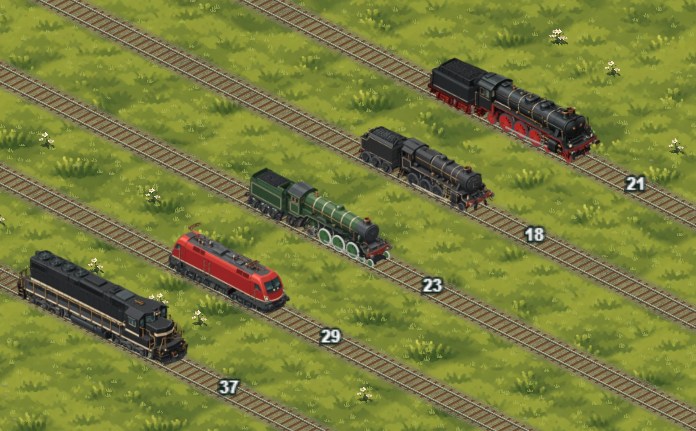
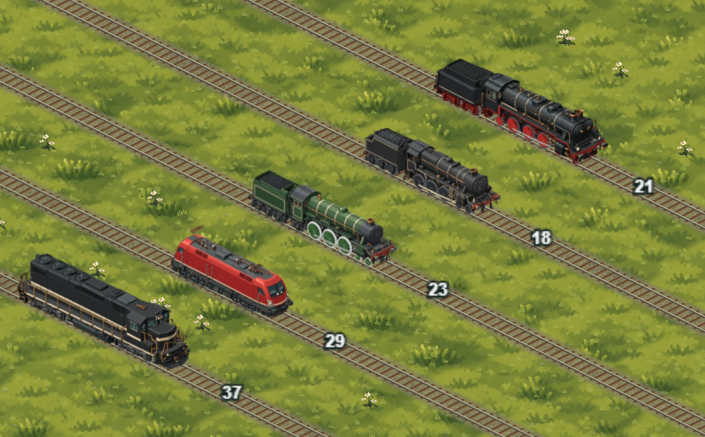
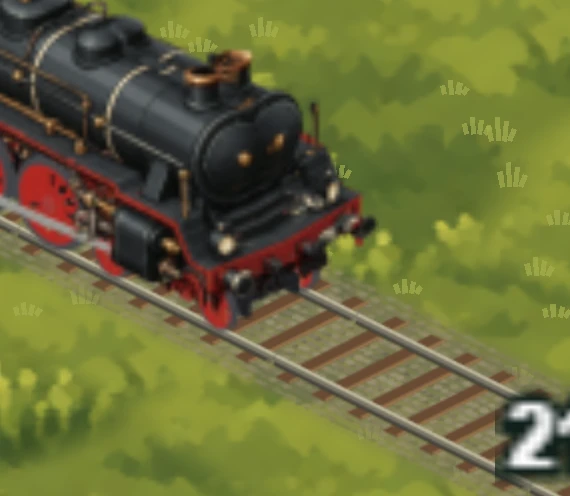
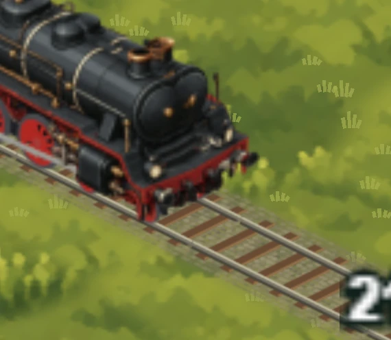
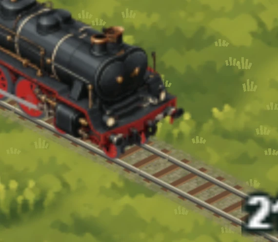
Amit a képeken látok: a mozdonyok teste mindhárom szinten ugyanaz, csak a futómű és a pálya szélessége változik. 39 %-nál a kerekek a test szélén járnak, a keskeny orrú gőzösöknél kilátszanak alóla. A valósághű nyomtávnál a futómű pontosan a modellé (nem kell széthúzni), a mozdony pedig nagyobbnak hat a pályához képest, ahogy egy terepasztalon. Az ára: a pálya vékonyabb, kis nagyításon kevésbé rajzos.
Bármelyiket választod: a pályarajz a pályás beszélgetés dolga (váltók, kereszteződések, hidak is), a mozdonyokat pedig mind újrarenderelem az új nyomtávra (kb. másfél óra gépidő). A kocsik rajzolt kerekei ugyanígy követik.
Azonos nagyítás (3×). Felül az előző kör, alatta a mostani.
Hátulról (jobb fent) előre: 25 PRR K4s · 26 M62 Szergej · 27 Mallard · 28 SBB Re 460 · 29 ÖBB 1116 Taurus · 30 TGV Sud-Est · 31 V63 Gigant. Jelölted: 29, 30, 31.
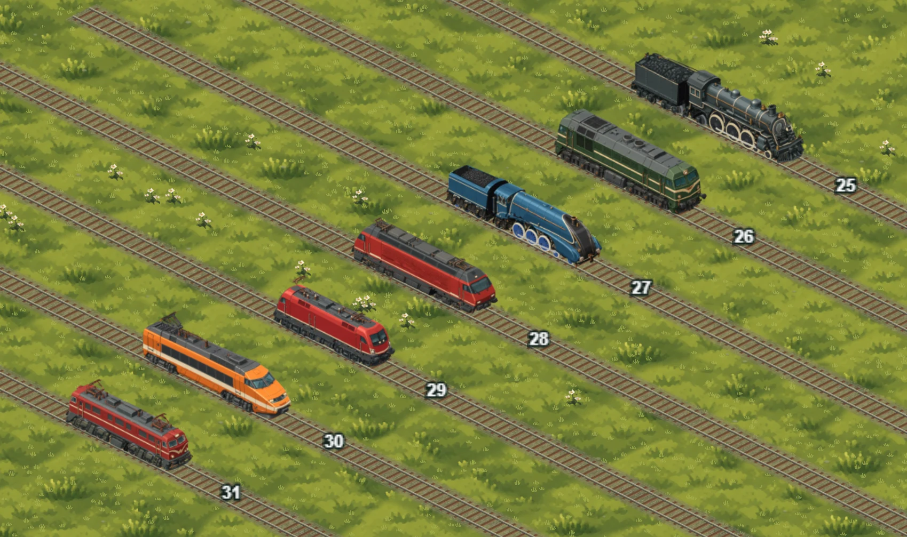
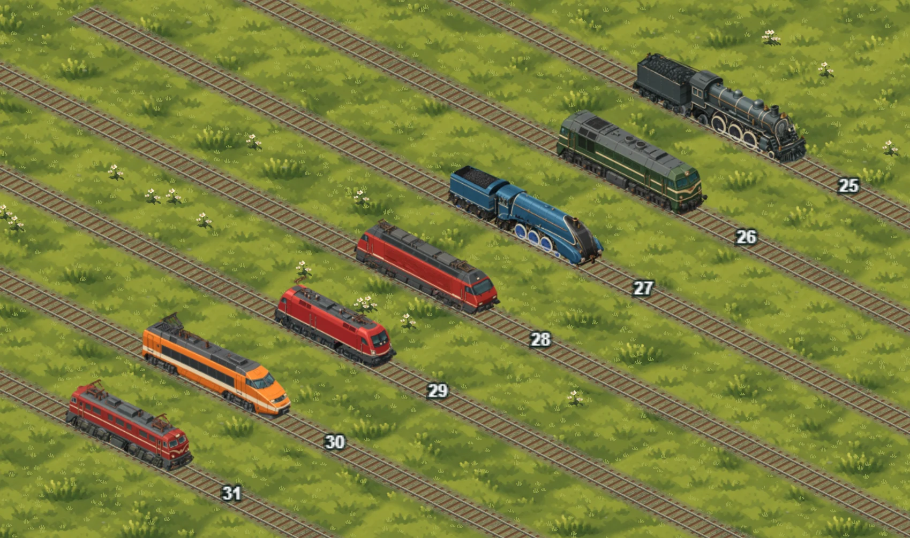
Hátulról (jobb fent) előre: 18 LMS Black Five · 19 SBB Ce 6/8 Crocodile · 20 Deltic Class 55 · 21 DRG Class 01 · 22 EMD F7 · 23 Flying Scotsman · 24 ICE 1. Jelölted: 20, 22, 24.
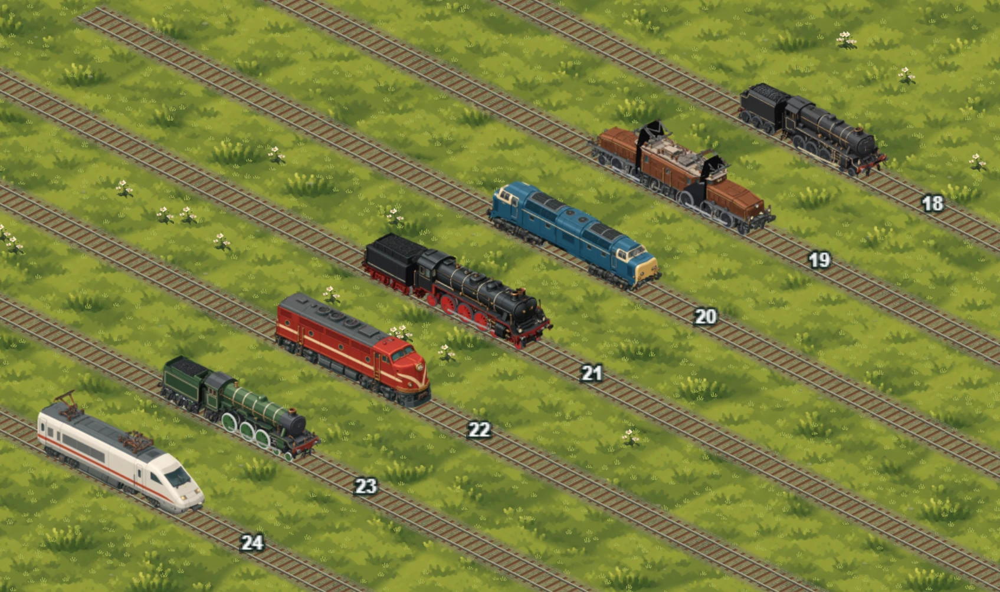
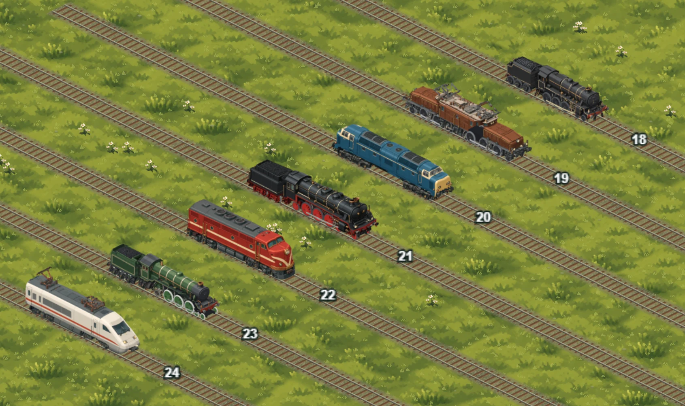
Hátulról (jobb fent) előre: 32 SP 4449 Daylight · 33 DDA40X Centennial · 34 PRR GG1 · 35 MÁV 424 Bivaly · 36 BR 9F · 37 EMD SD40-2 · 38 Big Boy 4014 · 39 Koutetsujou. Jelölted: 34, 36.
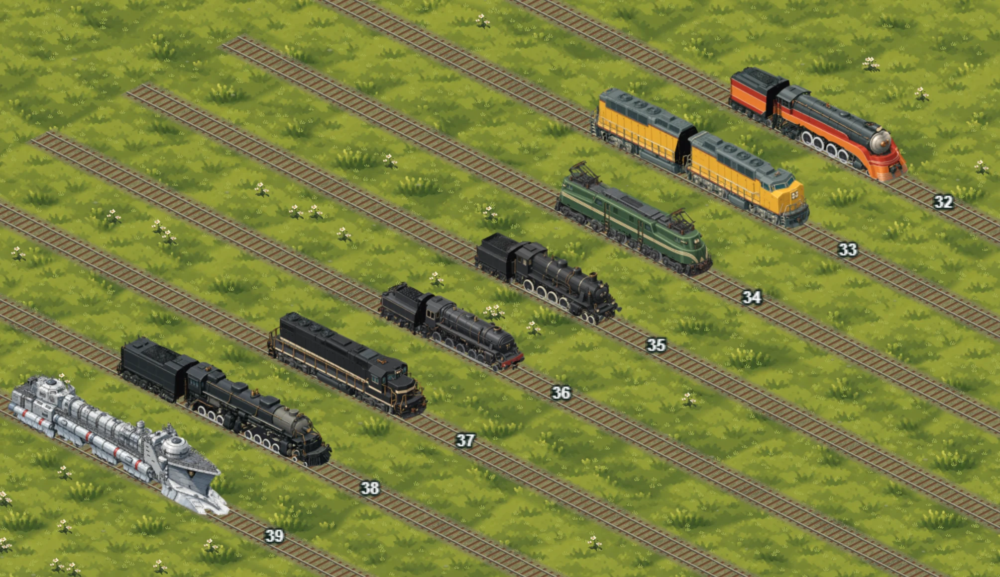
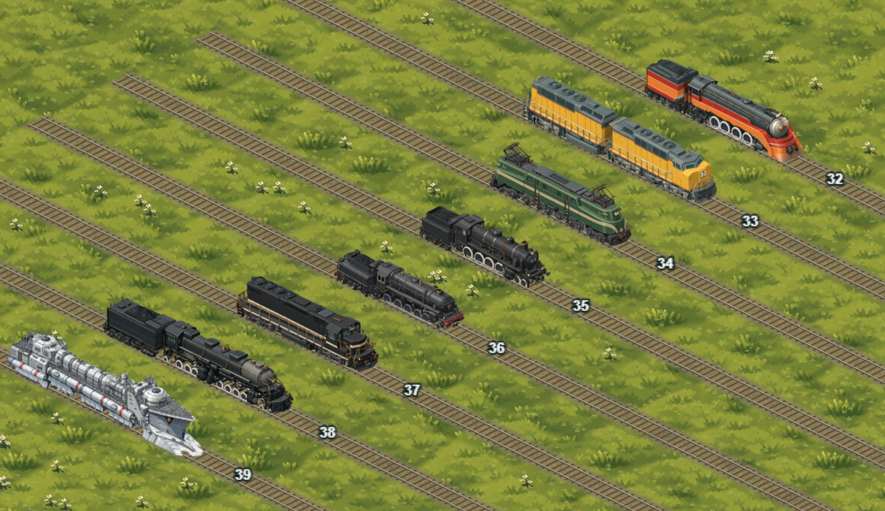
Hátulról (jobb fent) előre: 11 MÁV 375 · 12 Saddle Tank J94 · 13 BR Class 08 · 14 The General · 15 Jupiter · 16 Kandó V40 · 17 EMD SW1.
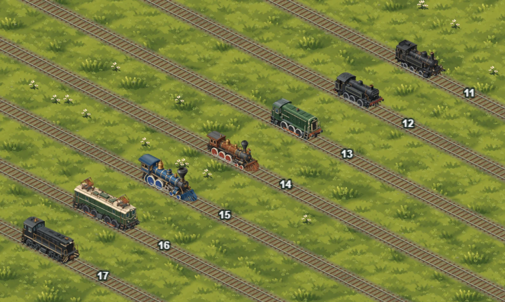
Hátulról (jobb fent) előre: 1 Stephenson's Rocket · 2 BM-50 · 3 Muki · 4 C-50 · 5 MÁV 490 · 6 MÁV Mk45 · 7 MÁV Mk48 · 8 Rezét.
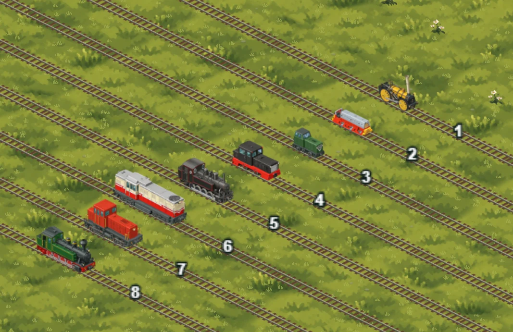
Rövid, ismétlődő felvételek a játékból; a kamera a mozdonnyal megy.
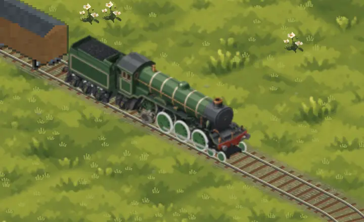
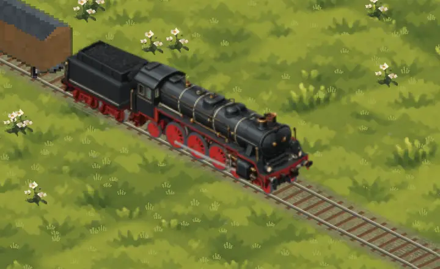
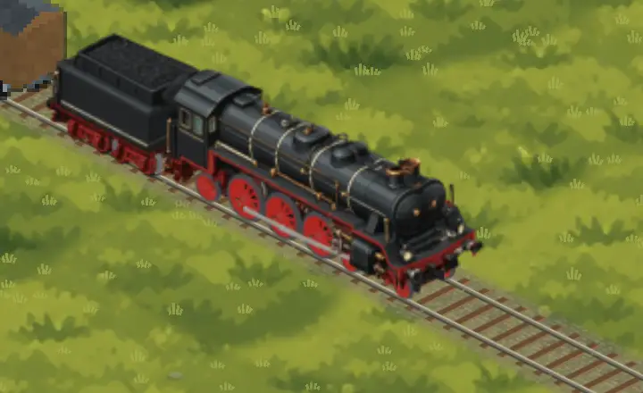
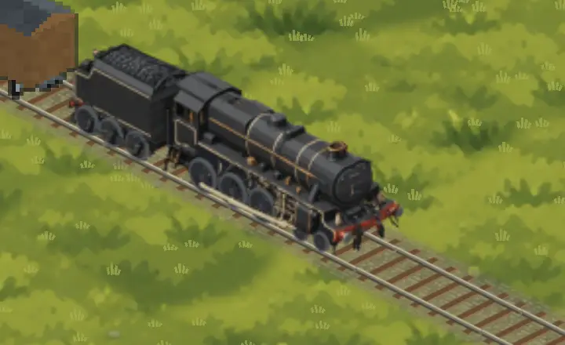
A mentés: G:/DEV/Terepasztal/saves/engine-models-demo.json. Minden mozdony lap-ID sorrendben áll egy rendezőn, két hurkon pedig vonatok járnak (köztük a DDA40X és a Big Boy), nappal és éjjel, füsttel.
Betöltés egy kattintással, amíg a demó build fut: http://localhost:5182/scratchpad/models/load-save.html.
Mező: a hossz az előző körben és most. Talált tengely: hányat talált meg a modellben a táblázat szerintiekből (összesen 202 / 215).
| ID | Mozdony | Mező, előtte | most | Talált tengely |
|---|---|---|---|---|
| 1 | Stephenson's Rocket | 0,75 | 0,75 | 2 / 2 |
| 2 | BM-50 | 0,76 | 0,76 | 3 / 3 |
| 3 | Muki | 0,6 | 0,59 | 2 / 2 |
| 4 | C-50 | 0,88 | 0,88 | 2 / 2 |
| 5 | MÁV 490 | 1,06 | 1,06 | 4 / 4 |
| 6 | MÁV Mk45 | 1,5 | 1,5 | 4 / 4 |
| 7 | MÁV Mk48 | 1,11 | 1,11 | 4 / 4 |
| 8 | Rezét | 1,15 | 1,15 | 4 / 4 |
| 11 | MÁV 375 | 1,34 | 1,34 | 3 / 4 |
| 12 | Saddle Tank J94 | 1,34 | 1,34 | 3 / 3 |
| 13 | BR Class 08 | 1,43 | 1,43 | 3 / 3 |
| 14 | The General | 1,58 | 1,58 | 5 / 5 |
| 15 | Jupiter | 1,76 | 1,76 | 4 / 4 |
| 16 | Kandó V40 | 1,93 | 1,94 | 4 / 4 |
| 17 | EMD SW1 | 1,59 | 1,59 | 4 / 4 |
| 18 | LMS Black Five | 2,39 | 2,39 | 8 / 8 |
| 19 | SBB Ce 6/8 Crocodile | 3,03 | 3 | 7 / 8 |
| 20 | Deltic Class 55 | 2,76 | 2,78 | 4 / 6 |
| 21 | DRG Class 01 | 2,96 | 2,96 | 9 / 10 |
| 22 | EMD F7 | 2,48 | 2,51 | 4 / 4 |
| 23 | Flying Scotsman | 2,62 | 2,62 | 9 / 9 |
| 24 | ICE 1 | 2,73 | 2,71 | 4 / 4 |
| 25 | PRR K4s | 3,07 | 3,07 | 10 / 10 |
| 26 | M62 Szergej | 2,63 | 2,61 | 6 / 6 |
| 27 | Mallard | 2,75 | 2,75 | 9 / 9 |
| 28 | SBB Re 460 | 2,6 | 2,56 | 4 / 4 |
| 29 | ÖBB 1116 Taurus | 2,13 | 2,13 | 4 / 4 |
| 30 | TGV Sud-Est | 2,7 | 2,7 | 4 / 4 |
| 31 | V63 Gigant | 2,18 | 2,18 | 4 / 4 |
| 32 | SP 4449 Daylight | 3,4 | 3,4 | 13 / 13 |
| 33 | DDA40X Centennial | 4,3 | 4,3 | 8 / 9 |
| 34 | PRR GG1 | 3,15 | 3,15 | 9 / 10 |
| 35 | MÁV 424 Bivaly | 2,68 | 2,68 | 9 / 10 |
| 36 | BR 9F | 2,69 | 2,69 | 8 / 9 |
| 37 | EMD SD40-2 | 3,06 | 3,06 | 6 / 6 |
| 38 | Big Boy 4014 | 4,21 | 4,21 | 12 / 16 |
| 39 | Koutetsujou | 4,31 | 4,31 |